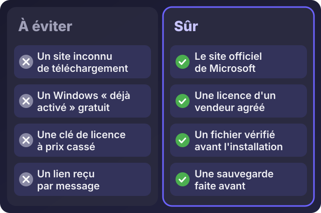
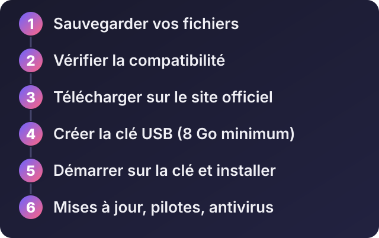

Accueil / Blog / Informatique au quotidien
Informatique au quotidienComment télécharger et installer Windows correctement (sans piratage ni mauvaise surprise)

Écouter cet article · environ 5 min
Un ordinateur lent, un virus, un disque remplacé, un nouveau poste à préparer : tôt ou tard, on doit réinstaller Windows. C'est aussi l'un des moments où l'on prend le plus de risques, parce qu'on cherche vite « Windows gratuit » sur Internet et qu'on clique sur le premier lien. Voici comment le faire proprement.
La règle d'or : un seul endroit pour télécharger Windows
Windows ne se télécharge que sur le site de Microsoft. Les copies trouvées sur des sites tiers, des groupes de messagerie ou des clés « déjà prêtes » peuvent avoir été modifiées : elles contiennent parfois des logiciels espions, ne reçoivent pas les mises à jour de sécurité, ou cachent un « activateur » dangereux.

La page officielle est celle-ci : Télécharger Windows 11 sur le site de Microsoft. Microsoft explique aussi la marche à suivre dans sa page d'aide : Créer un support d'installation pour Windows.
Les six étapes

1. Sauvegarder vos fichiers
Avant toute chose, copiez vos documents, photos et fichiers importants sur un disque externe ou un espace en ligne. Une installation « propre » efface le disque : ce qui n'est pas sauvegardé est perdu.
2. Vérifier la compatibilité
Windows 11 demande un ordinateur assez récent : un processeur 64 bits compatible, au moins 4 Go de mémoire, 64 Go de stockage, un démarrage en mode UEFI avec Secure Boot, et une puce de sécurité TPM 2.0. Microsoft publie la liste des processeurs pris en charge : consultez-la sur son site avant de commencer, car elle évolue.
3. Télécharger sur le site officiel
Sur la page de Microsoft, vous trouverez deux choix : l'outil de création de support d'installation, qui prépare la clé USB pour vous, ou l'image disque (ISO), un gros fichier de plusieurs gigaoctets. Si l'outil se ferme tout seul, ce qui est arrivé à certaines versions, téléchargez l'ISO à la place. Prévoyez une bonne connexion : si besoin, faites le téléchargement dans un lieu avec un Wi-Fi fiable plutôt que sur vos données mobiles.
4. Créer la clé USB
Il vous faut une clé USB vide d'au moins 8 Go : tout ce qu'elle contient sera effacé. L'outil de Microsoft la prépare automatiquement. Avec une ISO, vous pouvez utiliser Rufus, un logiciel gratuit très répandu pour cela.
5. Démarrer sur la clé et installer
Redémarrez l'ordinateur en appuyant, dès l'allumage, sur la touche du menu de démarrage. Elle change selon la marque, souvent F12, Échap, F9 ou F2. Choisissez la clé USB, puis suivez l'assistant :
- choisissez la langue et le clavier ;
- si Windows demande une clé de produit et que l'ordinateur avait déjà Windows, choisissez « Je n'ai pas de clé de produit » : la licence est souvent liée au matériel et s'activera toute seule ;
- choisissez « Personnalisée » pour une installation propre, et vérifiez bien le disque sélectionné : c'est lui qui sera effacé.
6. Après l'installation
- Lancez Windows Update jusqu'à ce qu'il n'y ait plus rien à installer.
- Installez les pilotes manquants (son, Wi-Fi, carte graphique) depuis le site du fabricant. Conseil : téléchargez le pilote réseau avant de formater, sur une autre clé, pour ne pas vous retrouver sans Internet.
- Vérifiez que Windows Sécurité est actif (on en parle dans l'article suivant).
- Réinstallez vos logiciels depuis leurs sites officiels, puis remettez vos fichiers sauvegardés.
Les erreurs à éviter
- Télécharger un Windows « activé » ou un « activateur ». C'est l'une des principales portes d'entrée des virus.
- Acheter une clé de licence à un prix très bas auprès d'un vendeur inconnu : elle peut cesser de fonctionner. Une licence s'achète chez Microsoft ou chez un revendeur agréé.
- Formater le mauvais disque : lisez les tailles et les noms avant de supprimer.
- Oublier la sauvegarde.
- Ignorer les mises à jour après l'installation.
Quand faire appel à un expert
Faites-vous aider si l'ordinateur contient des données importantes sans sauvegarde, s'il sert à votre entreprise, si l'installation affiche des erreurs, ou si l'ordinateur ne démarre plus sur la clé. Un expert peut aussi préparer le poste complet : système, mises à jour, antivirus, logiciels, sauvegarde automatique.
Si vous voulez que je m'en occupe, ou simplement que je vous guide à distance, écrivez-moi sur WhatsApp.